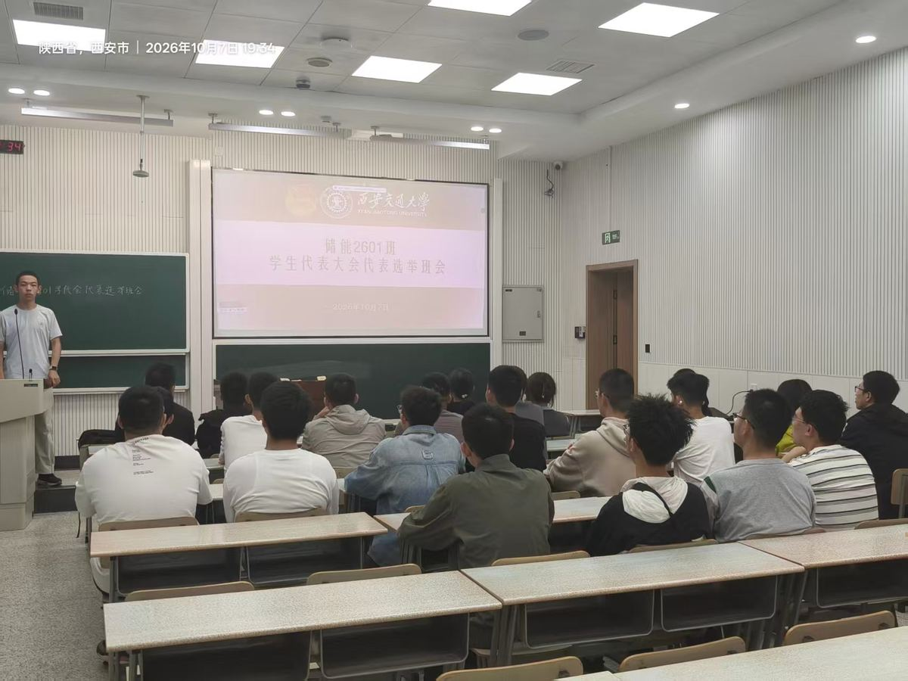
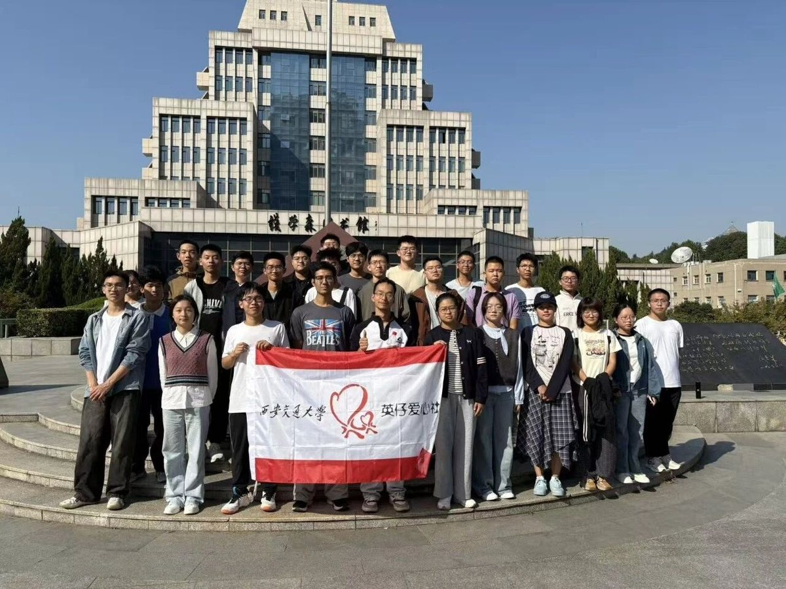
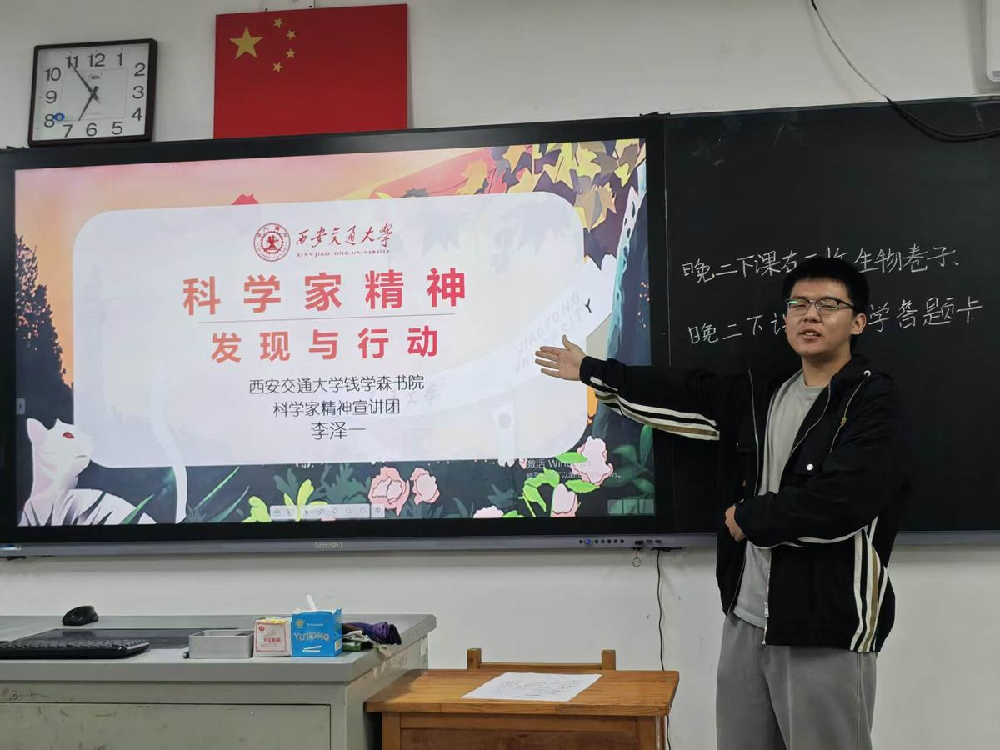

储能2601 团支部
赓续红色薪火 · 储启百卅新程
共青团西安交通大学
钱学森书院委员会
钱学森书院委员会
相聚钱学森书院，在共同学习、实践与日常相处中，成为储能2601 这个集体。



通过主题学习、支部交流与共同实践，增进成员之间的理解，探索新生团支部的协作方式。
围绕活动策划、执行、记录与联络开展协作，让不同兴趣与特长都能在集体生活中发挥作用。
以储能科学与工程为专业起点，通过课程学习、实验室研学与企业参观，逐步认识能源领域。
31
来自不同家乡的同学，在钱学森书院共同开启大学生活。
29
共同参与理论学习与实践，在日常行动中理解青年责任。
团支书、班长兼副支书、组织委员、宣传委员、生活委员、后勤、文体委员；下设策划、活动、宣传、后勤、外联、美工六个工作小组。
寻百卅根脉铸魂：通过场馆研学、主题观影、校际联学与线上闯关，追寻校史、西迁史与长征中的红色记忆，理解学校与国家民族同向同行的历程。
学百卅真知入心：通过知识竞答、专题辩论、朋辈分享与文体活动，引导成员主动学习，在思辨、动手与锻炼中增长本领。
携百卅之志并肩：通过中学宣讲、劳动包干、助盲与富平研学，把个人成长融入集体协作和社会服务。
创百卅新篇敢为：走进企业、科研平台与实验室，通过调研、访谈和联名创作，将专业学习同国家能源需求相联系。
组长 董儒汉
成员 刘纪康
负责策划活动内容，协调时间地点，确定各项活动负责人。
组长 刘纪康
成员 赵志蕊、孟令剑、李浩冉、潘之琦、郑许铭、查明俊、胡佳乐、马伊霖、秦赵琦、陈洋、郭一航、王宫垚、徐正炀、曲宇卿、詹天雨、夏雨晨、刘德瑞、王禹宸、王一然、张弛、张宸粼
负责具体活动开展，现场组织同学，落实场地与流程。
组长 蔡曙嵘
成员 张宸粼、张弛、郭一航、王一然、李泽一、夏雨晨、詹天雨、王宫垚
负责文案撰写、文档格式排版、摄影摄像与投稿。
组长 曲宇卿
成员 王禹宸、徐正炀、王乾翔、刘德瑞、赵师玖、黄蔚然、谭昊泽
负责活动经费报销与账目整理、活动物品购置，以及照片、签到表等材料的收集归档。
组长 董儒汉
成员 刘纪康、武泽凯、张宸粼
负责与团支部外部单位对接，以及校外活动的联系与开展。
组长 杨诺
成员 李泽一、赵师玖、董儒汉、刘纪康
负责材料的 PPT 制作、视频剪辑和活动材料编写，以及团日成果展示网站的制作与维护。
班徽定名「能流织环」，取“汇聚成环，协同向前”之意。两条首尾相衔的曲线把储能的汇集、存储与释放抽象为一个圆环，环心留白取虚以纳物。主推“原色蓝青”（科技蓝 #005699 · 青绿 #009B93），另备“爱国红梧桐金”与三套单色方案。
从设计稿走向活动现场，在一次次合影中记录共同经历。
以四篇章串联活动记录，汇集红色足迹、现场照片与已发布推文。